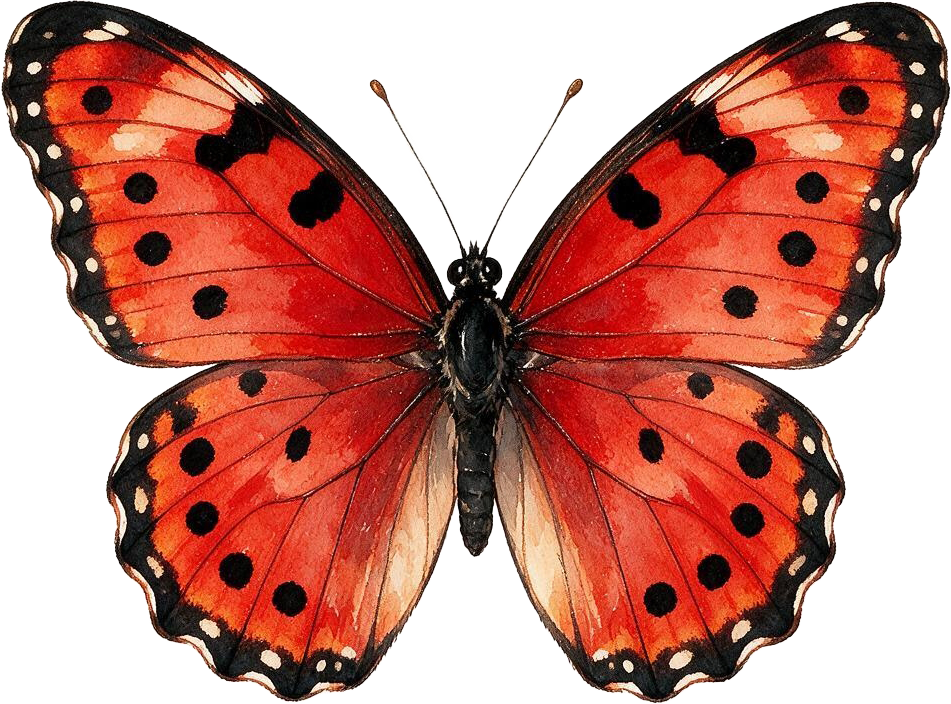
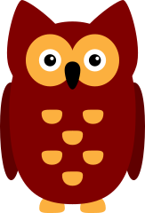
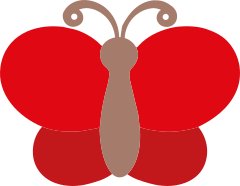

Verfolgen
Bewege das Tablet, um das Tier in der Mitte zu halten

Übung 1
Visuell

Übung 2
Audio-visuell

Übung 3
Verschwinden
Bewegungssensor aktivieren
Zurück zur Tierauswahl
Zurück zum Menü
Ton-Richtung
Ziel
💎
Halte das Objekt im Kreis
Zeit abgelaufen!
Nochmal
Beenden